|
 
|
ATTACK ON AMERICA! MEMORIAL SITE SEPTEMBER 11, 2001 THE DAY OF INFAMY CONTINUED |
|
|
Donations, no matter how small, keep all of the patriotic sites by Jeff Head, functioning & offset hosting, bandwidth, domain, & other services & fees. | ||||
| View Attack on America Guestbook |
Compiled by: Jeff Head LAST UPDATE - 20 June 2008 |
Sign Attack on America Guestbook |
|
PRESIDENT BUSH GETS WORD OF THE ATTACK, FLORIDA - 9:20 AM As these events were playing out, the President, George W. Bush, was in Sarasota, Florida speaking to an elementary school about his education initiatives. As he was speaking, an aide came up and whispered in his ear regarding the horror being played out in New York City. The President did not show emotion to the children or alarm them. He completed his speech and then, at 9:30 AM, he made a statement regarding the terrible events occurring in New York. He asked everyone to bow their heads in a moment of prayer, and then he indicated he would have to leave and that others in his party would complete the days activities. The President then departs Florida at 9:57 AM on Air Force One for a secure facility.
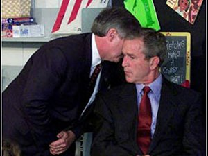 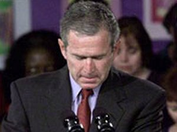 At 9:40 AM the government through the Federal Aviation Administration (FAA), took the unprecedented step of halting all private and commercial air traffic in all of the United States. All flights in the air are ordered to land, and the U.S. Air Force and Air National Guard are ordered to provide combat air patrols (CAPS) over New York, Washington, DC and many other places in the United States. In addition, both borders with Mexico and Canada are closed.
ATTACK ON THE PENTAGON, WASHINGTON, DC - 9:42 AM
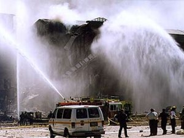 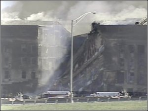 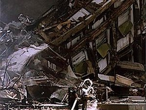 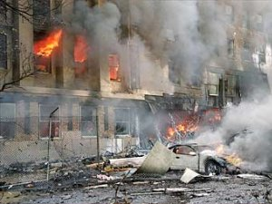 Hundreds of people were in that wing of the building when it was struck by this third commandeered aircraft. The aircraft came in low and plowed into the U.S. Army wing of the pentagon, penetrating three rings and collapsing a portion of the building.
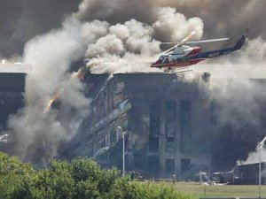 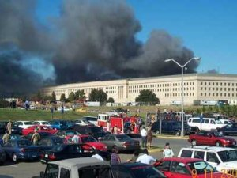 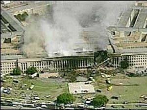 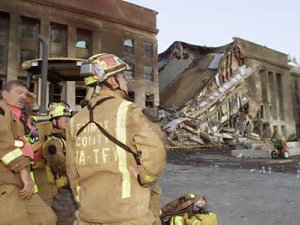 Again, given the time of day, given the hundreds of people working in the building at the time, given the sixty-four people on the airplane, it is estimated that close to two hundred people died in the Pentagon attack with close to one hundred others injured.
THE HEROES OF FLIGHT 93 AND HOW THEY HELPED FOIL AN ATTACK ON THE CAPITOL A fourth jet had also been hijacked, United Airlines Flight 93, with forty-four ppassengers and crew on board. Somewhere near Cleveland, OH, this aircraft turned around and headed for Washington, DC after having been commandeered by more terrorists. The terrorists indicated to the passengers that they planned to crash it into the capitol building. On board this aircraft, several passengers, after hearing what was occurring, had the chance to call their loved ones on GTE Airphones and discover the other horrific activities of the day. They discovered that other terrorists actually were crashing airliners loaded with passengers into the World Trade Center and the Pentagon.
Tom Burnett's phone call: A man named Tom Burnett called his wife in California from the plane. He was the Chief Operating Officer in a small company in Pleasanton, CA. He was the father of three children. Here is what he told his wife (paraphrased).
Our flight has been hijacked. The terrorists have knives and have stabbed someone. They indicate they are going to crash our plane into the capital building in Washington, DC.Jeremy Glicks Phone call: Jeremy Glick, traveling on the same flight also called his wife. Jeremy was 6'-2" tall and weighed 220 pounds, he was former college Rugby player and excelled in Judo. Here is what he told his wife (paraphrased): "Honey, it’s bad news."Linda Gronlund's Phone Call One of the women passengers on the plane, Linda Gronlund, was with her boyfriend, Joseph DeLuca. They were flying to California to celebrate Linda's 47th birthday the next day by visiting vineyards. Linda was a lawyer for BMW in Montvale, NJ. She was also a marine chemist, had a brown belt in karate, sailed, was an avid auto mechanic and went scuba diving. From the plane, she called her younger sister, and best friend, Elsa. Here is the paraphrased account of that conversation. "Elsa, we have been hijacked and we know about the World Trade Center."Todd Beamer's Phone Call Another man, Todd Beamer made a call and spoke to a GTE supervisor regarding these same events. In that call, Beamer, 32, an Oracle Inc. executive from Hightstown, N.J, told Lisa Jefferson, that he and others on the plane had decided they would not be a part of the hijackers' plans. Jefferson had informed him about the other hijackings. Beamer made her promise to call his wife and their two boys, David, 3, and Andrew, 1 and let them know he loved them. Beamer's call connected at 9:45 a.m. Here is his paraphrased account. Sandra Bradshaw's phone call: One of the Flight attendants, Sandra Bradshaw, was also involved with the plan to take back the aircraft. Bradshaw, an energetic 38-year-old Greensboro flight attendant, called her husband, Phil, to let him know what was happening. She knew, from other passenger calls, that their plane was now really a guided missile. Here is the paraphrased dialog they had:
"Have you seen what's happening? Have you heard? We've been hijacked."Investigators reviewing all of the evidence, including the cockpit recording, are now operating under the premise that the passengers made their way 110 feet from the rear of the plane to the cockpit, taking out the hijacker claiming to have the bomb along the way. They then stormed the cockpit. The last transmissions on the cockpit recording picked up the sounds of a struggle, of the crash of dishes, a man’s voice screaming loudly. The hijackers are heard calling to each other to hold the door. One of the passengers yells, “Let’s get them!” and then more crashing and screaming. One hijacker tells his confederates that the end is near. The hijackers hurriedly talk about finishing off the plane as the intensity of the struggle grows, and at this point the plane begins to dive. One of the hijackers cry out, “God is great!” The cockpit voice recorder picks up more shouting by one of the male passengers. . The hijackers apparently begin to fight among themselves for the controls, demanding, “Give it to me.” ... then silence. ... United Airline Flight 93 had plunged nose first into a field about eighty miles south of Pittsburgh, PA, near Shanksville leaving a crater almost fifty feet deep. Nothing was left except the thousands of small charred pieces of the exploded aircraft for officials to sift through.
Due to the heroic efforts of these few brave Americans, and perhaps due to other causes, that fourth plane never made it to the terrorists intended destination and hundreds, perhaps thousands, of additional lives were spared. In any case, because they did resist and took positive action to fight the terrorists, those passengers are heroes, and represent the true spirit of America when faced with such trials.
 A memorial service was held near the site of the crash a few days later. A haystack memorial was set up where those visiting could leave remeberances. Laura Bush, the Fisrt Lady attended with many of the families. The site of the crash should be made a full National Monument in tribute to the courage, determination and bravery of these individuals, and so that all Americans can know of their heroic struggle and sacrifice, and so that we all can remember that liberty has a dear price. A petition to Congress that effect,to establish a National Monument at the Crash site of Flight 93, has been started.
RESCUE AND RECOVERY EFFORTS
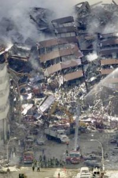 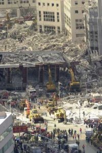 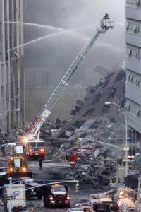 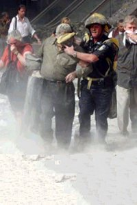 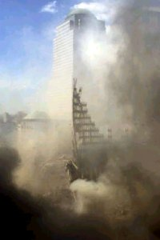 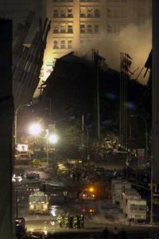 The same effort continued at the Pentagon. Fires continued to break out. Rescue efforts were ongoing. It was thought that anywhere from one hundred to eight hundred victims were trapped under the rubble. While these efforts were going on in that wing of the building, the Secretary of Defense and military planners were putting together options and plans for punishing those who had planned and abetted these acts.
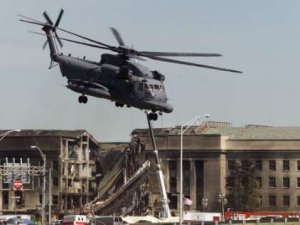 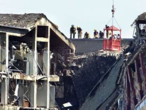
PRESIDENT ADDRESSES THE NATION AND PLANS WITH LEADERS
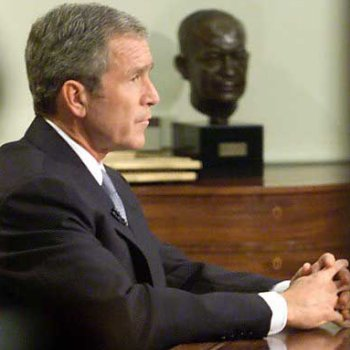 The President then continued meeting with his cabinet and congressional leaders. Cabinet members, including the Secretary of Defense and the Secretary of State indicated that not only groups, but nations could expect to be retaliated against if they were in any way involved. The congress joined in solidarity behind the President and indicated their full support in finding and punishing these terrorists and rogue governments.
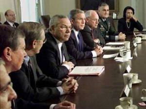 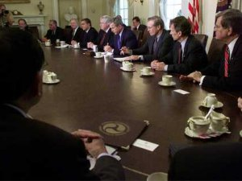 The National Guard was called out. All US Military installations went to the highest, war time level of alert. U.S. Air Force and Air National Guard units were called upon to fly patrols over the capital and over New York. U.S. Navy Aircraft Carriers and U.S. Navy Amphibious assault ships with their large hospital facilities were stationed outside of New York harbor along with their escorts to provide both protection and the additional hospital facilities.
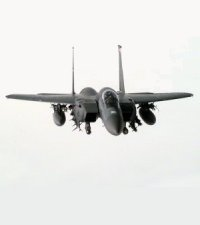 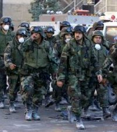 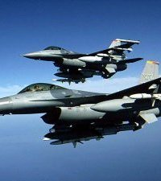 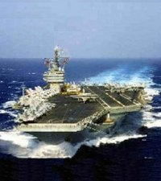 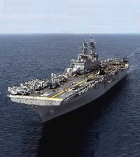 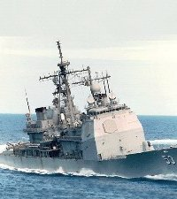
WORLD TRADE CENTER DEVASTATION
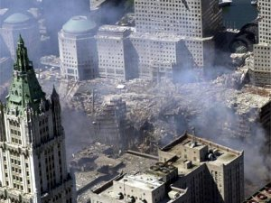 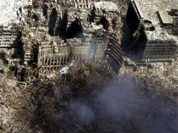 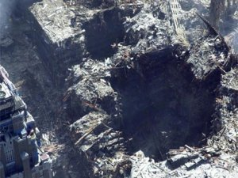 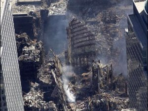
FBI MAKES PROGRESS, ISREALI INTELLIGENCE
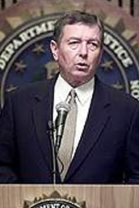 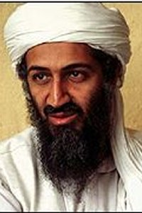 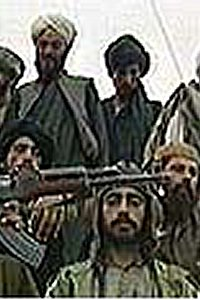 In Boston, a car believed to have been used by one group of the hijackers was found. Officials said it contained an Arabic-language flight manual. Investigators also raided two Boston area hotels thought to have been used by the hijackers. In one room a link was found to a name on one of the flight passenger lists. One group of hijackers with ties to Osama bin Laden is believed to have crossed from Canada and driven down to Boston to board one of the flights out of Logan airport. Reports also surfaced that Israeli intelligence had established a link to funding for the terror operation being provided by Iraq. In the days following the attack, it was also discovered through US intelligence that Osama bin Laden was in contact with Iraqi government agents from his base in Afghanistan in the days leading up to the Sept. 11 terrorist attacks. Bin Laden's contacts with the Iraqi government were detected before the attacks, and one official indicated that "This is the basis for signs of state sponsorship." Attorney General John Ashcroft said that foreign governments likely provided safe haven and support for the 19 terrorists who hijacked the four U.S. airliners. Officials said the intelligence of direct Iraqi government contacts with bin Laden is one of several pieces pointing to Baghdad's involvement in the attacks. Intelligence officials said one of the hijackers, Mohammed Atta, met with an Iraqi intelligence agent in the months before the attack. Despite denials in later yearws, it is clear that there was at least some tie and support of Al Quida operatives by Iraq. The Taliban government in Afghanistan provided the most direct and clear links to the terrorists however, both in terms of harboring and abetting Osmama's Al Quida organization, and in providing them places to train and establish their headquarter facilities.
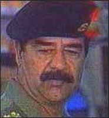 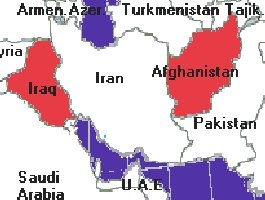
INDOMINATABLE AMERICAN SPIRIT We will tend to our dead, our injured and our heart broken. We will seek supplication from our God, the Almighty Creator. Then we will tend to this unsavory and terrible business. The enemies of this nation will rue the day that they raised our righteous indignation and ire. A swift, terrible, just and lasting retribution WILL be exacted for this atrocity, this unspeakably horrific act ... count on it, so help us God!
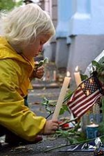 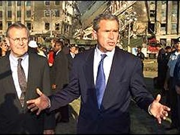 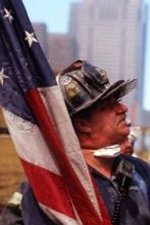 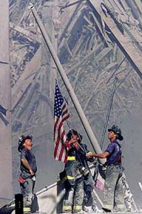 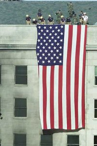 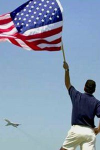
The answer clearly is to visit a horrible, lasting and just punishment and retribution on those who did this act and those who harbored or abetted them so they will NEVER consider doing this again ... and thereby preserve our liberties as our founders intended and is our unalienable right. 2008 Update: The ties to Afghanistan were proven to be true, the ties to Iraq were less clear. The United States targeted both countries in the retalitory operations, "Operation Enduring Freedom" against Afghanistan and the Taliban government in 2001-2004, and "Operation Iraqi Freedom" against Saddam Hussein and his Ba'athist party government in Iraq with major military operations conducted in 2003 and 2004. Two of Sadam's principle henchmen in his government were his sons, Uday and Qusay, both of whom met their ends fighting against US troops in July 2003. Sadam himself was captured in December 2003, then after a new government and constitution were voted in by the Iraqi people, he was tried, sentenced, and executed by the Iraqi people in December of 2006. A major insurgency, fueled by Iraqi Ba'athists and radical Islamics, and helped by other radical Islamics from the region, including Iranian forces, was waged hotly, as a guerilla war, into 2007. A large surge by US forces and the newly constituted, trained, and large Iraqi army at that time has significantly abated that insurgency and Iraq is now on the verge of becoming a free, secular republic...to the chagrin of the radical Islamics in the area, particularly Al Quida and Iran, and also to anti-war, far left liberal elements in the United States.
Jeff Head |


Copyright © 2001-2011 by Jeff Head, All Rights Reserved